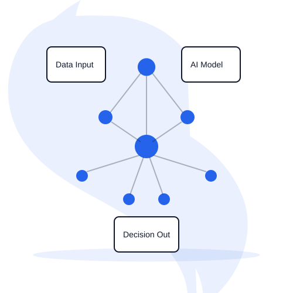
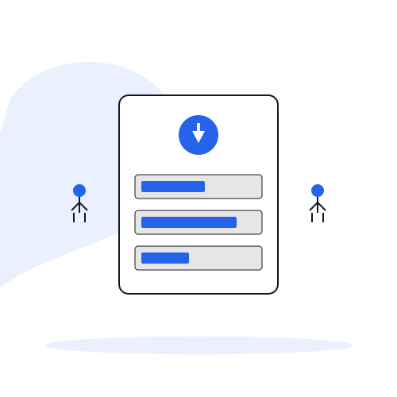

Enterprise-grade AI platforms designed to support responsible automation and decision-making.
These platforms are typically introduced as part of consulting-led engagements or pilots.

AI-assisted Expert Engagement Platform
AskBharatNow is a WhatsApp-first, AI-assisted platform that helps users access verified human experts (doctors, legal professionals, and financial advisors) through a risk-based triage model.
The platform combines AI for structured intake and classification, human experts for final decision-making, and full audit trails and compliance controls.
AskBharatNow is designed for environments where trust, accountability, and human oversight are essential.
Important: AskBharatNow is not a chatbot. It is a decision-support and expert-routing platform designed to ensure AI assists, but humans decide.
Available as part of consulting-led pilots or platform integrations.
Discuss AskBharatNow for Your Organization
Clinical Decision Support Operating System
AI Clinical OS is a clinical decision support platform designed to assist healthcare providers with case preparation, documentation, and workflow automation — without replacing clinical judgment.
The platform focuses on reducing administrative burden, improving documentation quality, and supporting safe, compliant AI adoption in clinics.
AI Clinical OS is built with strict separation between AI assistance and medical decision-making, ensuring clinicians remain fully in control.
Important: AI Clinical OS does not diagnose or prescribe. It functions strictly as a clinical workflow and decision-support system, operating under professional supervision.
Available as part of consulting-led pilots or platform integrations.
Explore AI Clinical OS for Clinical WorkflowsThese platforms are designed to accelerate consulting engagements and support responsible AI adoption in regulated environments.
Integrated within consulting engagements to accelerate delivery and provide proven frameworks for AI adoption.
Deployed as internal platforms with customization, governance controls, and integration into existing enterprise systems.
Launched as controlled pilots with limited scope before large-scale rollouts, ensuring risk mitigation and stakeholder confidence.
Implemented with full governance frameworks, audit controls, and compliance mechanisms enabled from day one.
All platforms are built on enterprise-grade Microsoft infrastructure with compliance-first design principles.
Secure, scalable cloud infrastructure
Enterprise AI with data sovereignty
Low-code automation and integration
Protected data exchange and integration
HIPAA, GDPR-aware architecture
AI assists, humans decide
Important Notice: These platforms are designed as decision-support and workflow systems. Final decisions are always made by qualified human professionals. Our products assist, not replace, professional judgment.
Schedule a technical overview to discuss how these platforms can support your organization's needs.
Request Platform Overview